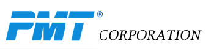

Melbourne, Australia
Venue: Melbourne Brain Centre at the University of Melbourne3-6 August 2015
Email:
organizingcommittee
@iwsp7.org
Background
The international workshop on seizure prediction (IWSP) series is the leading international, cross-disciplinary conference focused on using a deeper scientific and medical understanding of epilepsy, in concert with advanced engineering techniques, to develop new diagnosis, treatment and intervention options for patients with epilepsy. IWSP7: Epilepsy Mechanisms, Models, Prediction and Control is the 7th in this series. The IWSP conference series was born out of the desire to predict epileptic seizures and has been organised by the International Seizure Prediction Group (ISPG). Since its inception the series has expanded its focus to cover the parallel and interacting study of (1) the basic mechanisms of epilepsy using neurophysiology and neuroimaging; (2) methods to predict, detect and control seizures; and (3) the development of computational models, and the integration of mechanistic models into prediction and control. These strands will help to utilize our understanding of physiology in conjunction with the limited physiological measurements available from epilepsy patients in order to develop improved, novel engineered epilepsy treatment solutions.
Per its name, IWSP7: Epilepsy Mechanisms, Models, Prediction and Control will focus especially on the engineering and science of epilepsy from basic mechanisms and imaging, to computational modeling for analysis and prediction, through to feedback control of epilepsy.
The ISPG group has held, to date, six international workshops approximately every 18 months, alternating between the U.S. and Europe. The workshops have addressed topics encompassing seizure prediction, seizure generation, and seizure control.
Previous conferences in this series:
IWSP6 San Diego USA in November 2013
organized by Bruce Gluckman, Bjoern Schelter, Catherine Schevon and Susan Arthurs
IWSP5 Dresden, Germany in September 2011
organized by Ronald Tetzlaff, Christian Elger, and Klaus Lehnertz
( conference book)
IWSP4 Kansas City, MO, USA in June 2009
organized by Ivan Osorio, Mark Frei, Susan Arthurs, and Hitten Zaveri
(summary paper, debates paper, conference book)
IWSP3 Freiburg, Germany in September 2007
organized by Andreas Schulze-Bonhage, Jens Timmer, and Björn Schelter
(conference book)
IWSP2 Bethesda, MD, USA in April 2006
organized by Leonidas Iasemidis, Chris Sackellares, Randall Stewart, and Joseph Pancrazio
IWSP1 Bonn, Germany in April 2002
organized by Klaus Lehnertz and Brian Litt
(summary paper)
Committees
Local Organizing Committee (primarily from the University of Melbourne)
Kuhlmann, Levin, PhD
Grayden, David B., PhD
Cook, Mark J., MD
Burkitt, Anthony N., PhD
Freestone, Dean R., PhD
Kameneva, Tatiana, PhD
Lai, Alan, PhD
O'Sullivan-Greene, Elma, PhD
Peterson, Andre, PhD
Susan Arthurs, Alliance for Epilepsy Research
Scientific Advisory Board
Bragin, Anatol, PhD, Brain Research Institute, UCLA
Gluckman, Bruce,PhD, Penn State University
Gotman, Jean, PhD, Montreal Neurological Institute, McGill University
Lehnertz, Klaus, Prof. Dr. rer. nat., Medical Center, University of Bonn
Le van Quyen, Michel, PhD, CNRS, Pitié-Salpêtrière Hospital
Li, Shichou, MD, China Association Against Epilepsy, World Health Org.
Litt, Brian, MD, PhD, Neurology, Bioengineering, Univ. Pennsylvania
Menendez de la Prida, Liset, PhD, Instituto Cajal - CSIC
Netoff, Theoden, PhD, University of Minnesota
Perucca, Emilio, MD, University of Pavia, President ILAE
Richardson, Mark, MD, Kings College London
Schelter, Bjoern, PhD, University of Aberdeen
Schevon, Catherine, MD, PhD, Columbia University
Schiff, Steven J., MD, PhD, Penn State University
Schulze-Bonhage, Andreas, MD, PhD, Univ. Hospital of Freiburg
Stacey, William, MD, PhD, University of Michigan
Terry, John, PhD, University of Exeter
Tetzlaff, Ronald, PhD, University of Dresden
Vonck, Kristl, MD, University of Ghent
Wendling, Fabrice, PhD, University of Rennes
Worrell, Gregory A. MD, PhD, Mayo Clinic
Zaveri, Hitten, PhD, Neurology, Yale University
Talk Videos
A selection of videos of IWSP7 talks is now online on the IWSP7 YouTube Channel. Please share this link with your friends and colleagues.
Program
IWSP7 poster prizes were supported by Symbiotic Devices and were awarded to:
-
Best clinical science poster
- Louis Andre van Graan, University College London - "INTRINSIC CONNECTIVITY NETWORK–BASED QUANTIFICATION OF THE BOLD CHANGES ASSOCIATED WITH EPILEPTIFORM ACTIVITY". Best basic science poster
- Yujiang Wang, Newcastle University - "MECHANISMS UNDERLYING DIFFERENT FOCAL SEIZURE ONSET PATTERNS". Honourable Mentions
- Michelle Chong, University of Melbourne - "A MULTIPLE-MODEL BASED ESTIMATION ALGORITHM FOR NEURAL MASS MODELS OF EPILEPSY".
- Piyush Swami, Indian Institute of Technology, Delhi - "AUTOMATED DETECTION OF EPILEPTIFORM SIGNATURES IN ELECTROENCEPHALOGRAPHY".
- Vincent Adam and Joana Soldado Magraner, University College London - "PERFORMANCE OF SYNCHRONY AND SPECTRAL-BASED FEATURES IN EARLY SEIZURE DETECTION: EXPLORING FEATURE COMBINATIONS AND EFFECT OF LATENCY".
- Francois Laurent, Instituto Cajal - "FUNCTIONAL RESOLUTION OF LOCAL FIELD POTENTIALS IN THE RAT EPILEPTIC HIPPOCAMPUS".
The program for IWSP7: Epilepsy Mechanisms, Models, Prediction and Control addressed three key themes:
- Seizure prediction from short- to long-term recordings.
- Model based data assimilation for time series analysis, neuro-intervention and feedback control.
- Multi-modal neuroimaging and computational modelling to assess the spatial origin of seizures and the epileptic network at multiple scales.
The following traditional IWSP themes were also covered: automated seizure detection and prediction, seizure physiology mechanisms at multiple scales, high frequency oscillations, seizure control, epileptic networks, and computational modeling of epilepsy. In addition, there was an invited talk the on genetics and the individual specific nature of epilepsy.
Novel additions to the program included a mentoring session and a 'Split-groups: problems & solutions' session to help the ISPG community to better define key problems and how they can be solved.
Download the full program for IWSP7 (size 5.6 MB).
Is the above file too big? Try these files:
Download the program of talks and events for IWSP7 (size 43 KB).
Download the list of poster titles and numbers for IWSP7 (size 42 KB).
Download the venue map and layout for IWSP7 (size 2.1 MB).
At a glance, the first day on Monday August 3 was an educational day, giving people an opportunity to learn more about epilepsy from the perspectives of the different disciplines of science, engineering & medicine. On the first night there was a networking reception and the poster session. The next two days involved a full schedule of talks with the conference dinner on the night of Tuesday August 4. On Thursday August 6 there was an overlap day between IWSP7 and the Melbourne Epilepsy meeting (ME@MBC’15 – which brings together the best of Melbourne Epilepsy research). IWSP7 registrants also had the option to freely participate in ME@MBC’15 including its second day on the morning of Friday August 7. The list of invited speakers is given below.
Of additional note, two half-day long Educational Day Tutorials occurred on Monday August 3 of the educational day in parallel with the educational day talks as described in the program. These tutorials were:
- 0830-1200 Monday August 3 – The Virtual Brain Tutorial – Timothée Proix, Paula Sanz-Leon.
- 1300-1730 Monday August 3 – IEEG Database Tutorial – Brian Litt, Hoameng Ung, Lolith Kini, Ankit Khambhati.
These tutorials were included in the conference fee but spaces were limited to 30 people per tutorial, therefore people were required to email organizingcommittee@iwsp7.org in order to register their interest. People were also required to bring their own laptop to the tutorials in order to participate. Once people signed up for the tutorials they were given instructions on what software or data to install on their laptops before the tutorials in order to be ready on the day of the tutorials. For more information, the abstracts for these tutorials can be downloaded here..
Invited Speakers
Catalina Alvarado-Rojas, Pontificia Universidad Javeriana, Colombia (Cross-frequency coupling and seizure prediction)
Samuel Berkovic, University of Melbourne, Australia (Genetics and individual-specific nature of epilepsy)
Sydney Cash, Massachusetts General Hospital, Harvard Medical School, USA (Cortical physiology and epilepsy)
Antonio Dourado, University of Coimbra, Portugal (Seizure Prediction and the EPILEPSIAE project)
Bin He, University of Minnesota, USA (EEG-based imaging to localise seizure and high frequency activity)
Louis Lemieux, University College London, UK (Multi-modal imaging of human epileptic zone and networks)
Liset Menendez de la Prida, Instituto Cajal - CSIC, Spain (Sources of functional heterogeneity in the cellular activity of hippocampal microcircuits in temporal lobe epilepsy)
Martha Morrell, Stanford University, Neuropace, USA (Responsive seizure control and its clinical implications)
Philippe Ryvlin, Lyon University, France (Vagal nerve stimulation and seizure prediction)
Bjoern Schelter, University of Aberdeen, UK (Recent advances in data-based modelling and their role in epilepsy research)
Steven Schiff, Penn State University, USA (Unification of spikes, seizures and spreading depression)
Piotr Suffczynski, University of Warsaw, Poland (Modelling of neuronal and ionic dynamics during ictogenesis)
John Terry, University of Exeter, UK (Modelling multiscale brain networks: seizure initiation, evolution and prediction)
Gregory Worrell, Mayo Clinic, USA (Forecasting epileptic seizures in dogs)
Venue/Hotels/Info
Venue
The conference was held in the Ian Potter Auditorium of the ground floor of the Melbourne Brain Centre at the University of Melbourne in Melbourne, Australia. The street address is: Kenneth Myer Building/30 Royal Parade, Parkville VIC 3052, Australia.
Hotels/Accommodation
The preferred accommodation provider for IWSP7 is ibis Melbourne Hotel, 15-21 Therry Street, Melbourne VIC 3000, Australia. This hotel is providing single rooms with a queen bed or twin rooms with one double bed and one single bed for A$135 per night (subject to availability; with options to include breakfast) for any of the nights of the 2nd through to the 6th of August. Also if you book early and pay online before you arrive you may get a much cheaper rate! Click here to book your accommodation with the IWSP7 rate at ibis Melbourne Hotel.
If you are interested in saving money by sharing a room with someone, let us know by emailing us at organizingcommittee@iwsp7.org. Otherwise, the following hotels are close to the Melbourne Brain Centre:
Naughtons Parkville Hotel, 43 Royal Parade, Parkville VIC 3052, Australia
Alston Apartments Hotel, 138 Elgin Street, Carlton VIC 3053, Australia
Rydges on Swanston Hotel, 701 Swanston Street, Carlton VIC 3053, Australia
Vibe Hotel Carlton, 441 Royal Parade, Parkville VIC 3052, Australia
More information on accommodation can be downloaded here.
Visas
For those of you from overseas planning to attend IWSP7 you will most likely need a visa to enter Australia regardless of which country you come from. It is your responsibility to obtain your visa. Many of you will be able to do it quickly and easily online by going to the following website: http://www.border.gov.au/Trav/Visa-1. Some of you will also have to ask the organizing committee for a letter of support. If you need a letter of support please email a draft of the letter to the organising committee at organizingcommittee@iwsp7.org. If you have any questions about visas please question your travel agent and the Australian Government through the above website.
Transport
Getting into Melbourne: To get to the city from Melbourne's airports, you can catch a taxi, or catch the Skybus from the main international and domestic airport at Tullamarine, or the Sita Coach from the domestic airport at Avalon. These buses arrive at Southern Cross Station in the city.
Public transport: in order to use public transport you can purchase a myki card at Southern Cross Station or around town. To get to the University of Melbourne or around town you can use the journey planner. If you need to save money and don't mind walking a couple of hundred metres to get from the northern edge of the inner city to the University, you can skip buying a myki card and take advantage of the free tram zone.
Other information
If you require childcare then you can contact Melbourne City Child Care Centre by emailing michele.williams@melbourne.vic.gov.au. Also a great place for family activities is the nearby Melbourne Museum.
Melbourne is an awesome city in the state of Victoria. There's plenty to see and do, so make the most of your trip to IWSP7 and Melbourne, Australia.
Sponsors/Partner Events
Sponsors
Platinum Sponsors

Gold Sponsors

Silver Sponsors
Bronze Sponsors
